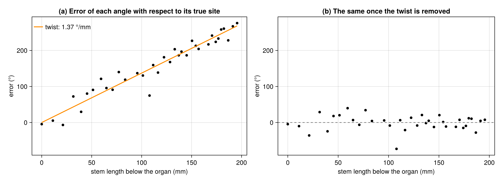
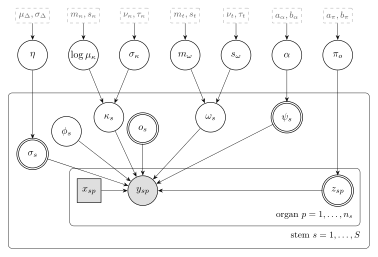

2. Angles given an order
Suppose for a moment that we know the order $\sigma$ of a stem: the organ at height $p$ comes from site $\sigma(p)$. How is its angle $y_p$ distributed? This page builds the answer one term at a time, one per difficulty of §1.3.
2.1 The spiral
assumption — the sites sit on a regular spiral. Site $j$ is at the angle
\[\phi + o\,(j - 1)\,\psi ,\]
where $\phi$ is the angle of the first site, $o = \pm 1$ the orientation of the spiral and $\psi$ the divergence. The divergence is the golden angle ($\approx 137.5^\circ$) with probability $\alpha$, and the Lucas angle ($\approx 99.5^\circ$) otherwise. (Other lists of canonical angles, or a single fixed one, are possible: Canonical angles.) $\phi$ is uniform on the circle, and each orientation has probability ½. These three quantities are specific to each stem, unknown, and integrated out (§2.6).
A permutation moves organs between sites, not the sites themselves: the organ at height $p$ is expected at $\phi + o\,(\sigma(p) - 1)\,\psi$. This separation, where the sites are versus in which order their organs appear, is at the core of the package.
2.2 The noise
assumption — the angle of an organ is its site's angle plus an independent error with a von Mises law, the circular analogue of the Gaussian:
\[\mathrm{vM}(y \mid m, \kappa) = \frac{e^{\kappa \cos(y - m)}}{2\pi I_0(\kappa)} .\]
The concentration $\kappa$ plays the role of an inverse variance: for large $\kappa$ the error has an sd of about $1/\sqrt{\kappa}$ radians. $I_0$ is the modified Bessel function of order 0.
assumption — each stem has its own concentration, $\log\kappa_s \sim \mathcal N(\log\mu_\kappa, \sigma_\kappa^2)$, integrated out of its likelihood (§2.6).
Why one $\kappa$ per stem? A poorly measured stem must be allowed to be noisy. With a single $\kappa$, the model could only explain its scattered angles by spurious permutations, which would bias everything downstream.
Why the noise is on the absolute angles, not on the divergences
One could instead place each site relative to the previous one, $\theta_j = \theta_{j-1} + \psi + \varepsilon_j$, with the noise on the divergences. Putting it on the absolute angles has two advantages:
- The sum over all orders is exact. Given the order, each angle depends only on its own site, so the sum over orders is a permanent, computed exactly (§3). A divergence involves two organs, and with the noise on the divergences the sum no longer factorises.
- A bad angle is one observation, which the outlier term of §2.4 sets aside. In divergences, it would spoil two neighbours in opposite directions, like a swap.
The price is that anything that adds up along the stem must be in the model, or it is read as permutations. This is why the twist of §2.3 should be fitted.
It is also the biology. Inhibitory-field models place a new primordium in the gap left by several older ones (Douady and Couder, 1996; Refahi et al., 2016), not by the last one only: an error is corrected rather than inherited, and the sites stay close to a regular lattice.
2.3 The twist
Many stems twist as they elongate (Landrein et al., 2013). If the surface of a stem of radius $r_s$ is inclined by a small angle $\alpha_s$, an internode of length $\ell$ rotates everything above it by $\ell \tan\alpha_s / r_s$. The rotations add up along the stem. The organ at height $p$ is then rotated by
\[\omega_s\, x_p, \qquad x_p = \ell_1 + \dots + \ell_{p-1} ,\]
where $x_p$ is the length of stem below the organ and $\omega_s$ a rate (degrees per mm) specific to each stem. When the internodes are not measured, $x_p = p - 1$ and the rate is per organ.
assumption — the rates are a random effect, $\omega_s \sim \mathcal N(m_\omega, s_\omega^2)$, integrated out of each stem's likelihood (§2.6).
Could a twist pass for a slightly different divergence? Both rotate the organs more and more going up the stem. But a divergence $\psi + \delta$ moves the organ of site $j$ by $o\,(j - 1)\,\delta$, with the sign of the orientation, while a twist rotates it by $\omega_s x_p$ whatever the orientation. Clockwise and counter-clockwise stems tell them apart: a shifted divergence pushes them in opposite directions, a twist in the same one. A twist also follows the length of the stem (long internodes rotate more), a divergence the organ count.
Why fit the twist. A twist of 1°/mm seems small, but the model reads absolute angles, and they accumulate it: an organ 60 mm up the stem is turned by 60°. Without a twist, the only way to explain this drift is to move organs to other sites, so it is read as permutations. The same holds for a single stem whose divergence is slightly off the canonical angle: within one stem, which has one orientation, this drift looks like a twist, and the stem's twist rate takes it up (only a shift shared by all the stems is told apart, as above). Divergences would hide these drifts; absolute angles do not. Fit the twist even for stems said to be untwisted.

Figure 2. The example stem. (a) The error of each angle with respect to the site of its true organ, against the length of stem below it: the errors drift linearly, at the stem's twist rate. (b) The same errors once the twist is removed: what remains is the von Mises noise.
2.4 Outlier angles
assumption — with a small probability $\pi_o$, an angle is not related to its site at all, and is uniform on the circle:
\[y_p \sim (1 - \pi_o)\,\mathrm{vM}\big(\cdot \mid \phi + o\,(\sigma(p) - 1)\,\psi + \omega_s x_p,\ \kappa_s\big) + \frac{\pi_o}{2\pi} .\]
A few badly measured angles are hard to avoid. Without this term, the model has to explain each of them somehow: by lowering the precision of the stem, or by moving its organ to another site. With it, such an angle is simply set aside. This is why it is on by default (outlier = false turns it off).
The prior. $\pi_o \sim$ Beta(1, 49). It is highest at 0 and decreases from there: median 1.4 %, mean 2 %, 95 % of its mass below 6 %. It weighs about as much as 50 well-measured angles, little next to the thousands of a typical data set, so $\pi_o$ is set by the data.
What the outlier term changes: a check on simulated stems
60 stems of 45 organs (the light-tailed design of §6.1), with 2.1 % of their angles replaced by uniform ones, fitted with and without the outlier term, and with a flat prior Beta(1, 1):
| without | with (default prior) | with (flat prior) | truth | |
|---|---|---|---|---|
| $\pi_o$ | — | 2.2 % | 2.3 % | 2.1 % |
| $\log\mu_\kappa$, $\sigma_\kappa$ | 1.70, 0.23 | 1.86, 0.15 | 1.86, 0.15 | 1.85, 0.15 |
| overtaking $q_1, q_2$ (true orders: 0.085, 0.028) | 0.094, 0.034 | 0.090, 0.031 | 0.090, 0.030 |
Left out, the outliers make the angles look noisier than they are ($\kappa$ 14 % too low, its spread across stems too wide), and a few of them are read as swaps. The outlier term removes both, and the prior makes no difference. On stems without outliers, it fits $\pi_o$ = 0.2 % and changes nothing else. The script is docs/nodes_outlier_study.jl.
2.5 The likelihood of one stem
Given the order, the angles are independent. The probability of the angles of a stem sums over everything that is not observed:
\[p(y) = \sum_{o,\,\psi} p(o)\,p(\psi) \int_0^{2\pi} \frac{d\phi}{2\pi} \int p(\kappa)\,d\kappa \int \mathcal N(\omega \mid m_\omega, s_\omega^2)\,d\omega \;\sum_{\sigma} P(\sigma) \prod_{p=1}^{n} \mathrm{vM}\big(y_p \mid \phi + o\,(\sigma(p) - 1)\,\psi + \omega\, x_p,\ \kappa\big).\]
(With the outlier term of §2.4, each von Mises factor is replaced by the mixture written there.)

Figure 3. The model as a graph, with the law of the order of §4. Circles are unknown, the shaded circle is observed and the square is given; arrows point to the quantities whose law they set, and the plates repeat their content per stem and per organ. Double circles are summed out exactly: the order $\sigma_s$ (§3), $o_s$ and $\psi_s$ (§2.6), and the outlier indicator $z_{sp}$ (§2.4). Single circles are integrated numerically (§2.6). Dashed boxes are the fixed parameters of PhyllotaxisPrior and TorsionPrior.
Everything here is fixed by this page except $P(\sigma)$, the law of the order. The models of the package differ only in $P(\sigma)$ (the propensity model of §4, the timing laws of §5), which is what makes the comparison of §1.5 possible. Two parts remain hard: the sum over $\sigma$ (§3) and the integrals over the unknowns of each stem (next section).
2.6 Integrating out the unknowns of each stem
Why integrate over the spiral, precision and twist of a stem, rather than fix each at its best value? Because fixing them makes the orders look more certain than they are: another offset or twist, with a few permutations, can explain the same angles, and a precision fixed too high turns noise into permutations. Integrating keeps every explanation, in proportion to its probability.
The orientation and the divergence take four combinations (two per canonical angle), summed exactly. The other three integrals are one-dimensional, each with a rule suited to its integrand:
- the offset $\phi$, uniform on the circle: the rectangle rule on
ngrid_ϕequally spaced nodes (32 by default), which is very efficient for periodic functions; - the precision $\log\kappa$, Gaussian across stems: a Gauss–Hermite rule on that law (
ngrid_κ, 16 nodes); - the twist $\omega$: the likelihood of one stem is very sharp in $\omega$ (about 0.1°/mm wide) and often multimodal, so a rule placed on the population law would miss its peaks. The nodes are placed on the peaks of each stem's own likelihood instead (9 per peak).
All terms are computed in log space, $\log I_0$ by a routine (logbesseli) that also accepts dual numbers. The cost is proportional to ngrid_ϕ × ngrid_κ × nnodes (twist nodes per peak, fit_map(m; nodes_kw = (; nnodes))). The boxes derive each rule and measure its accuracy on the 40 stems of the running example.
Integrating out the spiral: derivation and accuracy
Orientation and divergence. Four combinations, summed exactly with their probabilities (½ for each orientation, $\alpha$ and $1 - \alpha$ for the two divergences).
The offset $\phi$. It is uniform on the circle, and integrated by the rectangle rule on $N$ equally spaced nodes (ngrid_ϕ, 32 by default). Why this rule, and how accurate is it? For a given order and precision, the angle terms of a stem add up to one cosine in $\phi$: $\sum_p \kappa \cos(y_p - \phi - c_p) = a \cos(\phi - \bar\phi)$, with $c_p$ the rest of the expected angle and $a = \kappa \lvert \sum_p e^{i(y_p - c_p)} \rvert \le \kappa n$. So the integrand is a von Mises peak of concentration $a$, whose Fourier series is
\[e^{a \cos\theta} = I_0(a) + 2 \sum_{m \ge 1} I_m(a) \cos m\theta .\]
The rectangle rule on $N$ nodes integrates every Fourier mode exactly except the multiples of $N$. Its relative error is therefore $2 \sum_{j \ge 1} I_{jN}(a)/I_0(a) \approx 2\, I_N(a)/I_0(a) \approx 2\, e^{-N^2/(2a)}$ (for $N$ well below $a$): it falls very fast with $N$, but only once the nodes are closer than the width of the peak, $1/\sqrt a$. For a well-measured stem of 45 organs ($\kappa \approx 6.4$), $a \approx 290$: the peak is about 3.4° wide, while 32 nodes are 11.25° apart. The sum over orders and precisions mixes such peaks, and the sharpest ones dominate the error.
Accuracy. On the 40 stems of the running example, at their fitted parameters, each stem's log-likelihood was compared with a reference computed on 256 × 64 nodes ($\phi$ × $\kappa$; 64 $\kappa$ nodes in the rule too, so that only the $\phi$ rule differs), for the fitted $\sigma_\kappa$ and three larger ones (0.3, 0.5, 0.8):
| $\phi$ nodes | median error per stem | worst stem |
|---|---|---|
| 16 | 1.1–1.3 | 3.6–5.0 |
| 32 (default) | 0.16–0.17 | 0.30–0.46 |
| 64 | 0.0002–0.0003 | 0.003–0.02 |
| 128 | $10^{-12}\text{–}10^{-10}$ | $10^{-9}\text{–}10^{-6}$ |
(in log-likelihood units; the ranges run over the four $\sigma_\kappa$). As predicted, each doubling squares the error factor $e^{-N^2/(2a)}$. The error of the default depends on where each stem's peak falls between the nodes; see the last box of this section.
Integrating out the precision: derivation and accuracy
The rule. $\log\kappa_s$ is Gaussian, so its integral is a Gauss–Hermite rule on that law: with $K$ nodes $z_k$ and weights $\gamma_k$ (ngrid_κ, 16 by default),
\[\int p(y \mid \kappa)\, p(\kappa)\, d\kappa \approx \sum_k \gamma_k\, p\big(y \mid e^{\log\mu_\kappa + \sigma_\kappa z_k}\big).\]
The nodes move with $(\log\mu_\kappa, \sigma_\kappa)$, so the approximation is a smooth function of them, as the fit needs.
When it is accurate. The rule is exact when the likelihood, as a function of $z$, is a polynomial of degree below $2K$. In $\log\kappa$ the likelihood of a stem is a peak whose width is about $\sqrt{2/n}$ (the information about $\log\kappa$ carried by $n$ concentrated angles is about $n/2$), that is about 0.2 for 45 organs. In $z$ its width is $\sqrt{2/n}/\sigma_\kappa$. The rule is accurate while this width is not small compared with the spacing of the nodes: while $\sigma_\kappa$ is at most a few times $\sqrt{2/n}$. Unlike the twist, the precision of the stems varies little, and nodes placed on the population law are enough.
Accuracy. Same stems and reference as for $\phi$ (with 128 $\phi$ nodes, so that only the error of the $\kappa$ rule remains); median and worst stem, in log-likelihood units:
| $\sigma_\kappa$ | 8 nodes | 16 nodes (default) | 32 nodes |
|---|---|---|---|
| 0.21 (fitted) | 0.00003, 0.0003 | $< 10^{-6}$ | $< 10^{-9}$ |
| 0.3 | 0.002, 0.013 | $< 10^{-4}$ | $< 10^{-7}$ |
| 0.5 | 0.05, 0.11 | 0.004, 0.013 | 0.00002, 0.0002 |
| 0.8 | 0.31, 0.75 | 0.08, 0.17 | 0.009, 0.02 |
The default is accurate up to $\sigma_\kappa \approx 0.5$. Beyond, use 32 nodes.
Integrating out the twist: derivation and accuracy
The integral. Write $L_s(\omega)$ for the likelihood of stem $s$ at twist rate $\omega$: the formula of §2.5 without its integral over $\omega$. What is needed is $\int L_s(\omega)\, p(\omega)\, d\omega$ with $p = \mathcal N(m_\omega, s_\omega^2)$.
Nodes. Scan the rate, find the local maxima of $\log L_s$ within 8 log-units of the best (at most four), refine each by golden section, and measure its curvature. Each mode $r$ becomes a Gaussian component (centre $c_r$, sd $h_r$ from the curvature, widened by 25 %), with a weight $\pi_r$ proportional to its Laplace mass. Their mixture $q_s$ is a proposal that covers every peak. Nine Gauss–Hermite nodes $z_j$ (weights $\gamma_j$) are placed on each component: $\omega_{rj} = c_r + h_r z_j$.
Weights. Write the integral against the proposal and apply the Gauss–Hermite rule to each component:
\[\int L_s\, p = \int \frac{L_s\, p}{q_s}\, q_s = \sum_r \pi_r\, \mathbb E_{\mathcal N(c_r, h_r^2)}\Big[\frac{L_s\, p}{q_s}\Big] \approx \sum_{r,j} \frac{\pi_r \gamma_j}{q_s(\omega_{rj})}\, L_s(\omega_{rj})\, p(\omega_{rj}) .\]
The node weights $\pi_r \gamma_j / q_s(\omega_{rj})$ do not depend on the population law $p$. So the same nodes integrate any $(m_\omega, s_\omega)$, and the integrated likelihood is a smooth function of them, which the fit needs (§4.5). This is multiple importance sampling with the balance heuristic. It is exact when $L_s\, p / q_s$ is a polynomial of low degree on each component, that is, when each peak of $L_s$ is close to Gaussian and $p$ varies slowly across it.
Accuracy. On the 40 stems of the running example, at their fitted parameters, each stem's integral was compared with a brute-force sum over a fine grid of rates (step 0.005 °/mm), for the fitted population law and three others (sd doubled, sd halved, mean shifted by 0.5 °/mm). 38 stems have one mode, one has two and one has four. The highest peak of a stem has an sd of 0.04 °/mm (median; 0.03–0.06), against $s_\omega = 0.65$ °/mm for the population law: 16 times narrower.
| rule | median error per stem | worst stem |
|---|---|---|
| adaptive, 5 nodes per mode | 0.02 | 0.18–0.22 |
| adaptive, 9 nodes per mode (default) | 0.0007–0.0008 | 0.04–0.06 |
| adaptive, 15 nodes per mode | $2\text{–}3 \times 10^{-5}$ | 0.005–0.007 |
| Gauss–Hermite on the population law, 32 nodes | 0.2–2.3 | 0.6–11 |
| Gauss–Hermite on the population law, 128 nodes | 0.1–0.8 | 0.4–3.4 |
Errors are in log-likelihood units; the ranges run over the four population laws. The adaptive rule is equally accurate for the four population laws, as the derivation says. Its residual error comes from peaks that are not quite Gaussian, and more nodes per mode remove it. A rule placed on the population law misses the sharp peaks even with 128 nodes.
Why 9 nodes. On 60 simulated stems of 45 organs, going from 5 to 9 nodes per mode left the estimates where they were: the twist population, the twist of each stem, the decoded orders and the overtaking profile. Only the integrated log-likelihood moved, by 1.4. The default is 9 so that this log-likelihood is accurate enough to compare fitted models (below). The work grows in proportion to the number of nodes; for a quicker fit, use fit_map(m; nodes_kw = (; nnodes = 5)).
How accurate is accurate enough? The defaults are chosen for estimation. An integration error that barely changes as the parameters move shifts the log-likelihood without moving its maximum or its curvature, so it leaves the estimates and their standard errors alone. The errors here are of that kind: they depend mostly on the data of each stem (where its peak in $\phi$ falls between the nodes, how Gaussian its peak in $\omega$ is), little on the parameters. On the running example, refitting with 64 $\phi$ nodes and 9 twist nodes per peak instead of 32 and 5 moves every parameter by less than 0.1 standard error, and leaves every decoded order, the fitted delay law and its overtaking profile unchanged; the posterior probabilities of the order change by less than 0.002 (up to 0.15 on one stem). Only the integrated log-likelihood moves, by 0.9 over the 40 stems.
Comparing the integrated log-likelihoods of two different fitted models is another matter: the two fits sit at different parameters, where the errors differ. Use finer settings for that: 64 $\phi$ nodes, 32 $\kappa$ nodes if $\sigma_\kappa > 0.5$, and keep the default 9 twist nodes per peak (PhyllotaxisModelAD(angles; ngrid_ϕ = 64)). The timing laws of §5 are compared on the orders, not through these integrals, and do not need them.
Code. AngleLikelihood.stem_loglik! (one stem, all grids, and its gradient), stem_loglik(fit) (per stem), angle_loglikelihood(model, u); the accuracy checks of the three boxes: docs/integration_accuracy_study.jl; the twist: torsion_coordinate(ℓ), corrected_angles; simulation: simulate_stems (both laws of the order).